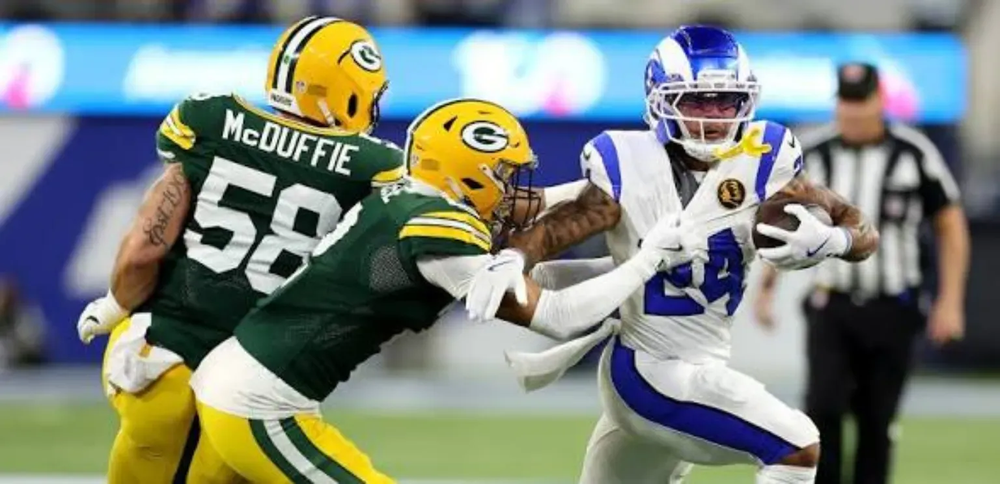

RAMS 26, PACKERS 13
Five straight: Los Angeles is building a contender while Green Bay loses its grip

Five consecutive victories say something about consistency; the way Los Angeles secured the fifth says even more about its adaptability. This wasn't a showcase of empty passing numbers or an offense needing Matthew Stafford to manufacture every answer. Against Green Bay, the Rams imposed a rushing identity, drained the clock and made the Packers play a game on Los Angeles' terms.
Blake Corum's 184 rushing yards were the headline within a 241-yard team rushing performance. The larger story was the marriage of physical running and situational discipline: long possessions kept Green Bay's offense watching, reduced the number of potential comeback drives and demanded that the Packers win at the line of scrimmage before they could even consider winning on the scoreboard. The Rams' lengthy touchdown possession to open the second half was a declaration that the 13–13 halftime tie wasn't going to turn into a shootout.
Los Angeles opened the third quarter with 14 plays for 64 yards. Blake Corum scored from the one after the Rams had spent 8:02 moving the ball. That is a hard drive to reproduce with a couple of explosive runs. Green Bay had to stop a series of ordinary gains and never got the Rams off the field. Corum finished with 184 yards on 32 carries. Kyren Williams added 46 on 12 and scored from seven yards out. The second back mattered because bringing fresh legs onto the field never gave the Packers a break from the assignment.
For Sean McVay, that flexibility matters in January. An opponent that can defend one preferred passing concept is a problem; an opponent that must also withstand sustained rushing volume faces a different kind of test. We should be careful not to turn one ground-heavy game into a guarantee of playoff dominance. But winning in multiple styles is a meaningful contender trait.
Green Bay's concern is larger than the 13 points. With only 55 rushing yards and no second-half scoring, the Packers struggled to give Jordan Love favorable down-and-distance situations or maintain offensive balance. Love's two interceptions magnified the pressure, but the quarterback cannot be the only explanation when the entire offensive operation is losing the physical battle. The team's recent slide deserves a look at protection, receiving availability, play sequencing and defensive fatigue rather than a simplistic claim that Love alone is responsible.
The chance to change the night came on defense. Ty’Ron Hopper picked off Stafford and returned the ball to the Rams’ 43. Two plays later, Jaylen McCollough intercepted Love’s deep throw for Matthew Golden. Christian Watson, who had already caught four balls for 65 yards and a score, had left with a concussion. Right guard Kevin Zeitler had gone out with an ankle injury. Green Bay still had field position and a one-score game. Giving the ball right back cost the Packers their best chance to make those absences manageable. Two straight losses leave them 6–5. At 7–4, Los Angeles has turned a 2–4 start into a wild-card push.
4DK Verdict: Los Angeles has earned the right to be discussed among the NFC's serious threats. Green Bay has to decide what kind of offense it wants to be before the losses stop looking temporary and start looking structural.